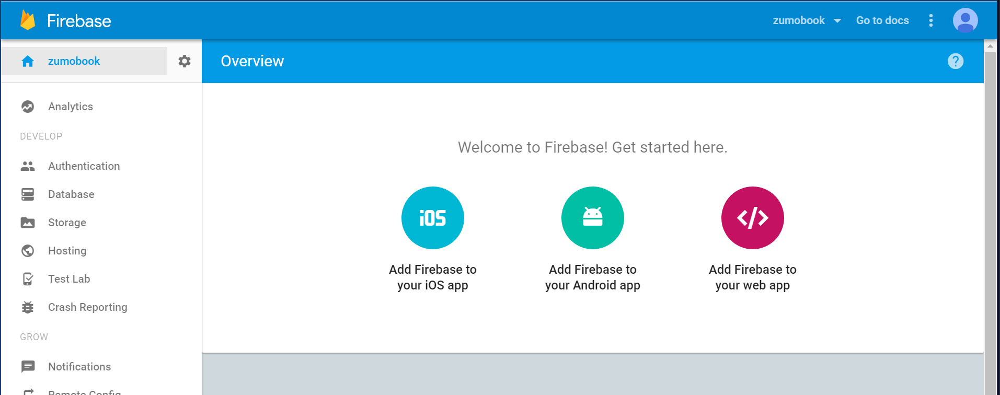
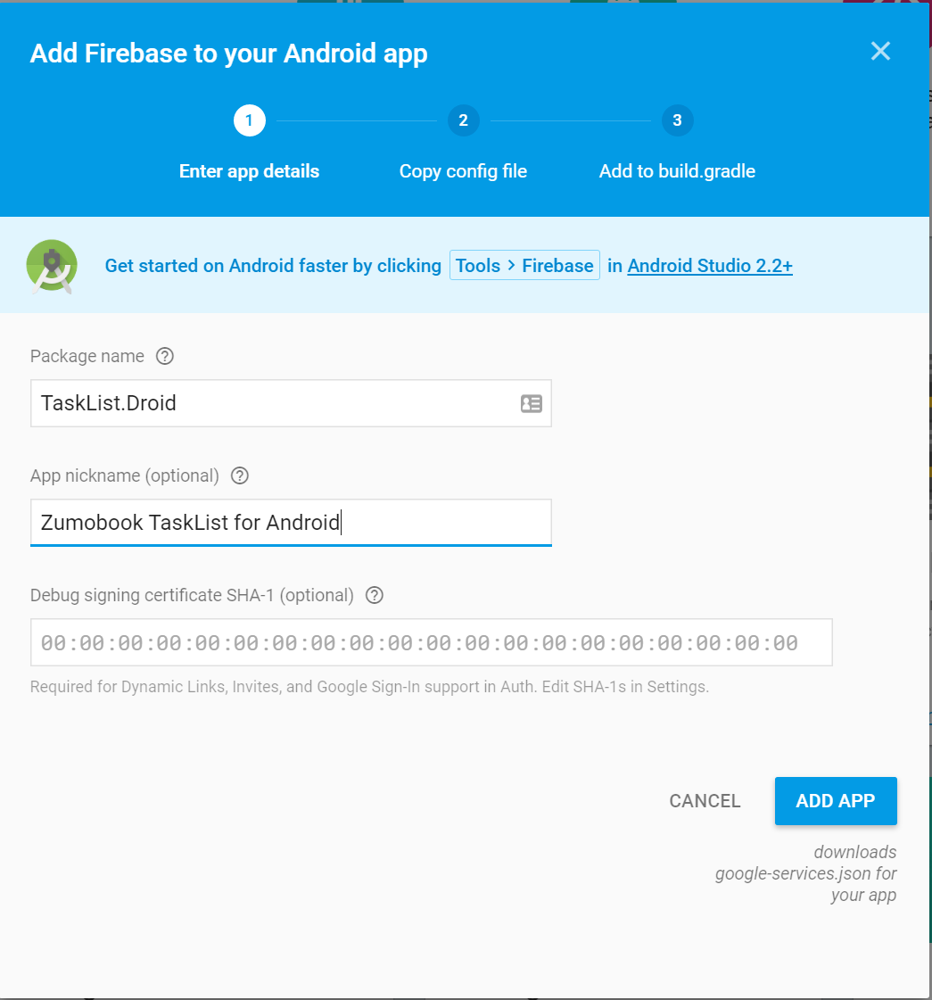
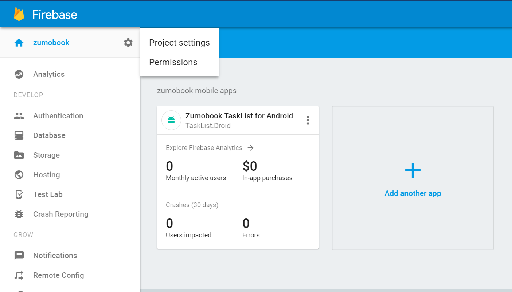
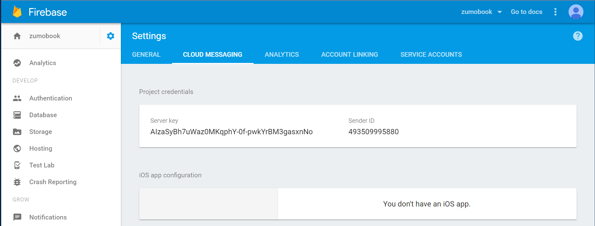
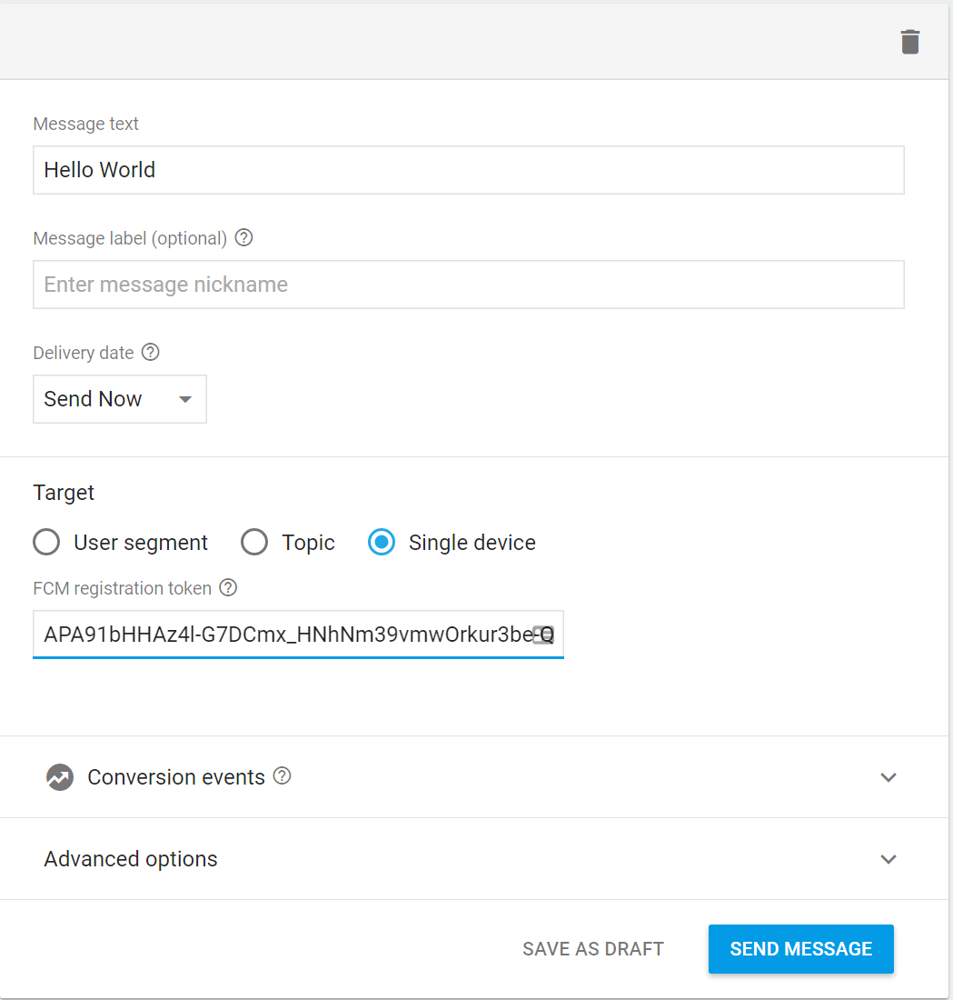
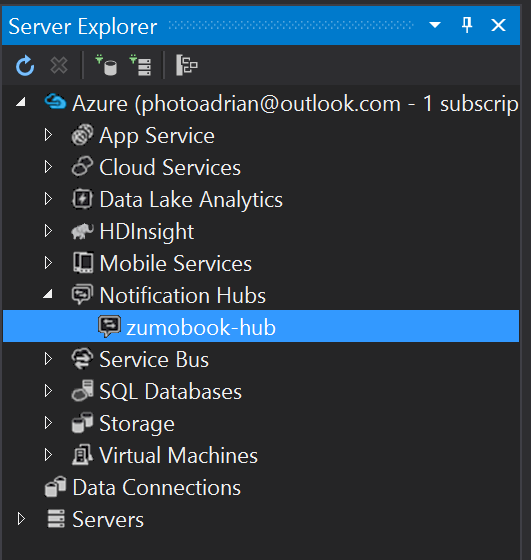
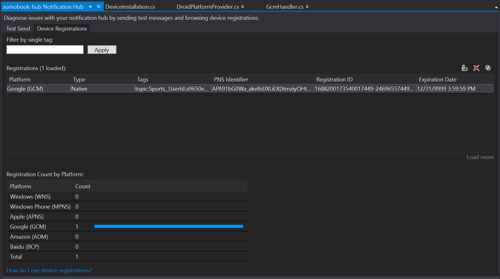
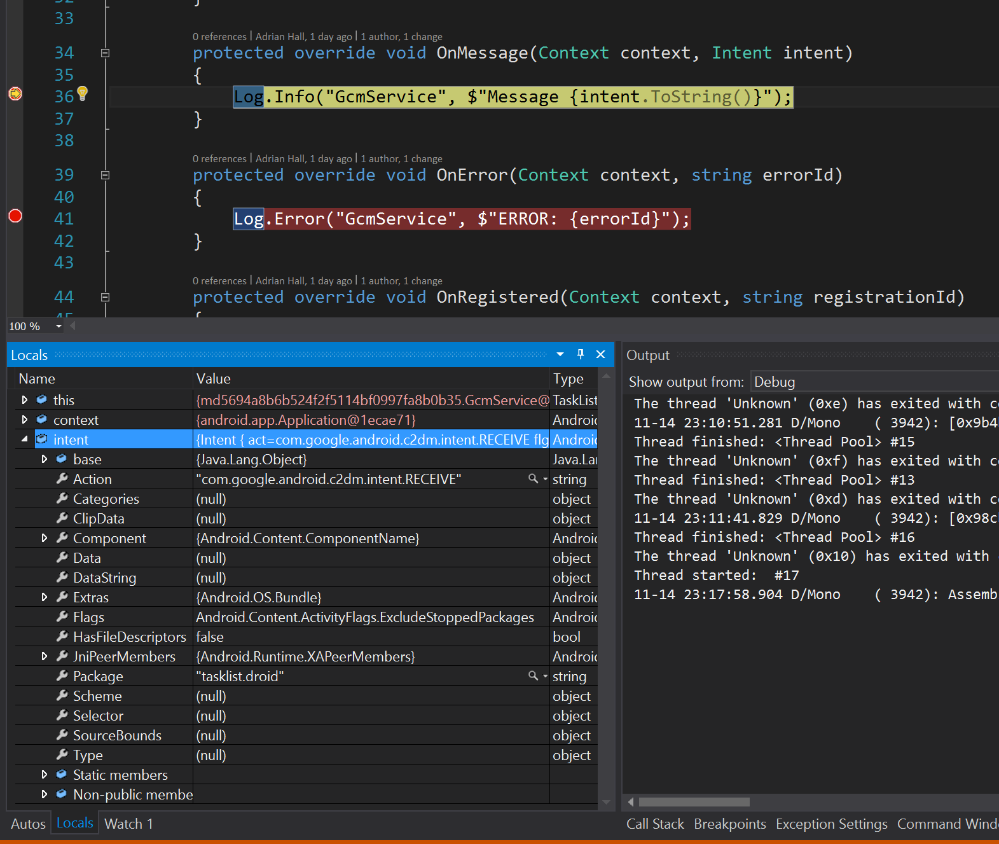

Android Push
Push notifications for Android devices are handled by Firebase Cloud Messaging - a service run by Google. This service used to be called Google Cloud Messaging and nothing has really changed since they rebranded the service. Google wanted to bundle all their mobile offerings under one roof. Firebase Cloud Messaging can still be used independently of the rest of Firebase.
Preparing for development¶
Warn
Push notifications are one of those areas where it really pays to have a real device instead of an emulator. It's frustrating to bump into so many issues with emulation, but it's almost inevitable. If you are having problems, use a real device.
Before continuing, you will need an Android Emulator with the Google Play SDKs installed, or a real Android device. You cannot use a vanilla emulator without the Google Play SDKs. To set up an emulator with the appropriate SDKs.
Visual Studio 2017
Visual Studio 2017 provides four emulators and all of them include the Google APIs already, so you can skip this section if you are using Visual Studio 2017. You still need to create an appropriate emulator if you are using Visual Studio 2015 or earlier.
In Visual Studio:
- Click Tools -> Android -> Android SDK Manager.
- Expand Android 6.0 (API 23).
- Select Google APIs Intel x86 Atom System Image.
- Expand the Extras.
- Select Google Play Services.
- Click on Install.
Wait for the installation to complete, then close the Android SDK Manager.
Disable Hyper-V
The Android Virtual Device from Google is incompatible with Hyper-V. To disable Hyper-V, open a PowerShell prompt as an Administrator, then run the command bcdedit /set hypervisorlaunchtype off and reboot. You may also have to install Intel HAXM, which is available for download through the Android SDK Manager but may need to be installed separately, depending on how you installed the Android SDK.
- Click Tools -> Android -> Android Emulator Manager.
- Click Create...
- Fill in the form. You must specify:
- Target: Android 6.0 - API Level 23
- CPU/ABI: Google APIs Intel Atom (x86)
- Memory Options: RAM: 768 Other than these settings, there is a lot of flexibility. Consult the Android documentation.
- Once ready, click on OK to create the device.
- Click OK to confirm the creation.
Test that the emulator device works:
- Click the device you just created.
- Click Start....
- Click Launch....
Fixing Permission Denied
You may get an error for ...\/system.img: Permission denied. To fix this, open up a File Explorer and go to C:\Program Files (x86)\Android. Right-click on android-sdk and select Properties. Click the Security tab, then Edit. Highlight Users in the Group or user names box, select Allow Full control in the Permissions for Users box, then click OK. Once the Security settings have been applied, you can try to start the emulator again.
If the device starts and looks like a regular Android device, then you've completed the task. You must have a working emulator or real device before continuing, so don't continue until you've got something working.
Registering your app with FCM¶
To start, you need a Firebase Developer Account. Go to the Firebase Developer Console and sign in with a Google account. If you have never been a Google developer before, the site will ask you to agree to their legal terms so your account can be converted to a developer account.
Once done, create a Firebase application. If you previously created a Google project for authentication, you can import the Google project instead. The effect is the same - you need a Firebase project at the end.
Click on Add Firebase to your Android app. You aren't actually adding Firebase - just the push capabilities.

The next screen is confusing - it's talking about Android native development and we are developing in Xamarin Forms. We need to enter a namespace, so use the namespace of your application. The actual value does not matter as we are not using the majority of the Firebase SDK:

Click on ADD APP, then on CONTINUE, and finally FINISH. The process will download a file: google-services.json, which is used by Android Studio in native applications. The instructions along the way are also for Android Studio.
Once done, click on the cog next to your project name and select PROJECT SETTINGS.

Click on the CLOUD MESSAGING tab:

This gives you a server key and a sender ID. You need the "Legacy Server Key" if you have two keys listed. We will need these later.
Linking Notification Hubs to FCM¶
Now that you have the server key and sender ID, you can enter that information into Notification Hubs to enable it to push to your Android clients.
- Log in to the Azure portal.
- Find your App Service:
- Use All Resources, then enter the name in the Filter items... box.
- Use Resource Groups, find the resource group, then click on the items. Which ever way you choose, enter the App Service.
- Select Push from the menu (under SETTINGS).
- Click Configure push notification services.
- Click Google (GCM).
- Enter the server key in the API Key box.
- Click on Save.
We can now turn our attention to the mobile client.
Registering for Push Notifications¶
Registering for push notification is always a per-platform piece, so it has to go into the platform specific code. We've seen what this means in terms of code before. First, we create a new method definition in the IPlatformProvider.cs interface and the ICloudService.cs interface, then we update the AzureCloudService.cs to call the platform-specific code. Finally, we need an platform-specific implementation.
First, the IPlatformProvider.cs - I'm going to add a new method: RegisterForPushNotifications() that will do all the work for me:
using System.Threading.Tasks;
using Microsoft.WindowsAzure.MobileServices;
namespace TaskList.Abstractions
{
public interface IPlatformProvider
{
MobileServiceUser RetrieveTokenFromSecureStore();
void StoreTokenInSecureStore(MobileServiceUser user);
void RemoveTokenFromSecureStore();
Task<MobileServiceUser> LoginAsync(MobileServiceClient client);
Task RegisterForPushNotifications(MobileServiceClient client);
}
}
The first four methods are from our authentication work. The final method is our new method. There is a similar method in the ICloudService.cs interface:
using System.Threading.Tasks;
using Microsoft.WindowsAzure.MobileServices;
using TaskList.Models;
namespace TaskList.Abstractions
{
public interface ICloudService
{
ICloudTable<T> GetTable<T>() where T : TableData;
Task<MobileServiceUser> LoginAsync();
Task LogoutAsync();
Task<AppServiceIdentity> GetIdentityAsync();
Task RegisterForPushNotifications();
}
}
We also have a concrete implementation of this in AzureCloudService.cs that simply calls the platform specific version:
public async Task RegisterForPushNotifications()
{
var platformProvider = DependencyService.Get<IPlatformProvider>();
await platformProvider.RegisterForPushNotifications(client);
}
These are required irrespective of whether you are implementing iOS, Android, UWP or any combination of those platforms. Let's now work with the Android platform-specific code. Before we look at the platform specific code, we are going to need a library that implements the GCM/FCM library.
Alternative Libraries
We are going to use a fairly old and venerable GCM Client. There is an official Xamarin client for Google Play Services for example. Feel free to experiment with other libraries. The process for registration tends to be very similar between SDKs.
- Right-click on Components in the TaskList.Droid project.
- Select Get More Components....
- Enter Google Cloud Messaging Client in the search box.
- Select the Google Cloud Messaging Client.
- Click Add to App.
Now that you have the library installed, you can configure registration with FCM as follows:
public void Init(Context context)
{
RootView = context;
AccountStore = AccountStore.Create(context);
try
{
// Check to see if this client has the right permissions
GcmClient.CheckDevice(RootView);
GcmClient.CheckManifest(RootView);
// Register for push
GcmClient.Register(RootView, GcmHandler.SenderId);
Debug.WriteLine($"GcmClient: Registered for push with FCM: {GcmClient.GetRegistrationId(RootView)}");
}
catch (Exception ex)
{
Debug.WriteLine($"GcmClient: Cannot register for push: {ex.Message}");
}
}
Most of this Init() method existed before. The GcmClient calls are new. The first two calls ensure that the mobile device is capable of handling registrations and that the application is properly configured. The GcmClient.Register() call registers with FCM. I'm dumping the registration ID we get back to the debug channel.
We also need to define a handler for the FCM calls. FCM will send an out-of-band notification to the Android OS, which will figure out which application to wake up, and then call the defined handler. Mine is in Services\GcmHandler.cs:
using Android.App;
using Android.Content;
using Android.Util;
using Gcm.Client;
[assembly: Permission(Name = "@PACKAGE_NAME@.permission.C2D_MESSAGE")]
[assembly: UsesPermission(Name = "@PACKAGE_NAME@.permission.C2D_MESSAGE")]
[assembly: UsesPermission(Name = "com.google.android.c2dm.permission.RECEIVE")]
[assembly: UsesPermission(Name = "android.permission.INTERNET")]
[assembly: UsesPermission(Name = "android.permission.WAKE_LOCK")]
namespace TaskList.Droid.Services
{
[BroadcastReceiver(Permission = Constants.PERMISSION_GCM_INTENTS)]
[IntentFilter(new string[] { Constants.INTENT_FROM_GCM_MESSAGE }, Categories = new string[] { "@PACKAGE_NAME@" })]
[IntentFilter(new string[] { Constants.INTENT_FROM_GCM_REGISTRATION_CALLBACK }, Categories = new string[] { "@PACKAGE_NAME@" })]
[IntentFilter(new string[] { Constants.INTENT_FROM_GCM_LIBRARY_RETRY }, Categories = new string[] { "@PACKAGE_NAME@" })]
public class GcmHandler : GcmBroadcastReceiverBase<GcmService>
{
// Replace with your Sender ID from the Firebase Console
public static string[] SenderId = new string[] { "493509995880" };
}
[Service]
public class GcmService : GcmServiceBase
{
public static string RegistrationID { get; private set; }
public GcmService() : base(GcmHandler.SenderId)
{
}
protected override void OnMessage(Context context, Intent intent)
{
Log.Info("GcmService", $"Message {intent.ToString()}");
}
protected override void OnError(Context context, string errorId)
{
Log.Error("GcmService", $"ERROR: {errorId}");
}
protected override void OnRegistered(Context context, string registrationId)
{
Log.Info("GcmService", $"Registered: {registrationId}");
GcmService.RegistrationID = registrationId;
}
protected override void OnUnRegistered(Context context, string registrationId)
{
Log.Info("GcmService", $"Unregistered device from FCM");
GcmService.RegistrationID = null;
}
}
}
Replace the SenderId
You must replace the SenderId with your sender ID that you copied from the Firebase Console.
Let's start at the top. In order to use push notifications from Firebase, we need to tell our application to ask for that permission. We need the OS to wake us up (WAKE_LOCK), access the Internet (INTERNET), and handle push notifications (C2D_MESSAGE and RECEIVE).
We use the GcmHandler to register a receiver. This is done via the intents that are provided by the GcmClient package. The class that will receive the events is the GcmService class. There are four methods that must be defined there - registration, un-registration, messages and errors. Right now, I'm just setting up some debug messages so I can see what is going on.
We can test this right now. Place a breakpoint on each Log method, then run the app.
The application could not be started
If you get the error "The application could not be started. Ensure that the application has been installed to the target device and has a launchable activity (MainLauncher=true)". This is because the Android system can't handle package names in upper case. Right-click the TaskList.Droid project and select Properties then Android Manifest. Change the Package name field to something lower case.
Once the application launches, the GcmService.OnRegistered() method is hit immediately. You will be able to see the registration ID. Click on Continue. The device is now registered with FCM. Note the registration ID as you will need it in the next step.
Send an ad-hoc message as follows:
- Go to the Firebase Developer Console.
- Click your project.
- Click Notifications in the left hand nav.
- Click Send your first message.
- Enter something in the Message text box.
- Select Single device under Target.
- Paste the registration ID in the GCM registration token box.
-
Click Send Message.

-
Click Send.
At this point the breakpoint in GcmService.OnMessage() will be hit. You can examine the push by looking at the intent variable. Click on Stop to stop the application.
Moving onto registration with Notification Hubs, we need to pass the registration ID we received from FCM to our mobile backend. The App Service will ensure our device is registered properly. We need to do this at the appropriate time, and that depends on a lot of factors. There is no problem with registering multiple times if our requirements change. In this app, I might choose to register at the beginning of the app, once the user has authenticated and if I had a settings page, when the settings changed. This activity is done in the Services\DroidPlatformProvider.cs file:
public async Task RegisterForPushNotifications(MobileServiceClient client)
{
if (GcmClient.IsRegistered(RootView))
{
try
{
var registrationId = GcmClient.GetRegistrationId(RootView);
//var push = client.GetPush();
//await push.RegisterAsync(registrationId);
var installation = new DeviceInstallation
{
InstallationId = client.InstallationId,
Platform = "gcm",
PushChannel = registrationId
};
// Set up tags to request
installation.Tags.Add("topic:Sports");
// Set up templates to request
PushTemplate genericTemplate = new PushTemplate
{
Body = @"{""data"":{""message"":""$(message)""}}"
};
installation.Templates.Add("genericTemplate", genericTemplate);
// Register with NH
var response = await client.InvokeApiAsync<DeviceInstallation, DeviceInstallation>(
$"/push/installations/{client.InstallationId}",
installation,
HttpMethod.Put,
new Dictionary<string, string>());
}
catch (Exception ex)
{
Log.Error("DroidPlatformProvider", $"Could not register with NH: {ex.Message}");
}
}
else
{
Log.Error("DroidPlatformProvider", $"Not registered with FCM");
}
}
Registering without Tags
You can also register without tags using the commented-out single line of code push.RegisterAsync(registrationId);
You should call RegisterForPushNotifications() whenever you feel that the definition of the push endpoint should change. In my application, I added the registration after the LoginAsync() method in the ViewModels\EntryPageViewModel.cs file:
async Task ExecuteLoginCommand()
{
if (IsBusy)
return;
IsBusy = true;
try
{
var cloudService = ServiceLocator.Instance.Resolve<ICloudService>();
await cloudService.LoginAsync();
await cloudService.RegisterForPushNotifications();
Application.Current.MainPage = new NavigationPage(new Pages.TaskList());
}
catch (Exception ex)
{
await Application.Current.MainPage.DisplayAlert("Login Failed", ex.Message, "OK");
}
finally
{
IsBusy = false;
}
}
Run the application again, with the same breakpoint in the GcmService.OnMessage() method. You can remove the other breakpoints at this point. Log into the application this time. Let's explore some of the debugging tools for Notification Hubs. Within Visual Studio, you can use View -> Server Explorer to open the server explorer. Expand the Azure node then the Notification Hubs node:

Double-click on your Notification Hub to open the developer console. This provides two functions. Firstly, we can click on the Device Registrations tab:

We can see the registration of our test emulator device. Note that our request for the topic:Sports tag has also been honored. If we did not configure that tag within the Push blade in the portal, that would not have been added to our registration.
We can also send to a specific device using the test send facility. Click over to the Test Send facility. Since we only have one device, we can use broadcast. Each installation will also be given a tag: $InstallationId:{guid}, where {guid} is the installation ID. Select Google (GCM) -> Default to send a message to FCM. The body will be filled in for you.
Since we have already set a breakpoint at the OnMessage() method in GcmService.cs, our app is running and we have entered the app and logged in, click Send. The breakpoint should be triggered within a reasonable amount of time. I'd like to say that it will be near instantaneous, but push notifications may take some time depending on what is happening within the push notification system at the time. The push should not take more than a couple of minutes to arrive and will likely arrive much quicker.

We now have the full registration lifecycle working and we can do a test send to hit the right piece of code.
Processing a Push Notification¶
Processing of push notifications is done within your mobile app, so you can process the push notifications however you want. For example, you may want to silently pull a specific record from the server and insert it into your SQLite offline cache when a push arrives, or you may want to pop up a message that opens the mobile app.
In this example, we are going to show the message that comes in the message field of the data block. There are more examples in the recipes section. The OnMessage() method in GcmService.cs is triggered on a push. A simple notification looks like this:
protected override void OnMessage(Context context, Intent intent)
{
Log.Info("GcmService", $"Message {intent.ToString()}");
var message = intent.Extras.GetString("message");
var notificationManager = GetSystemService(Context.NotificationService) as NotificationManager;
var uiIntent = new Intent(context, typeof(MainActivity));
NotificationCompat.Builder builder = new NotificationCompat.Builder(context);
var notification = builder.SetContentIntent(PendingIntent.GetActivity(context, 0, uiIntent, 0))
.SetSmallIcon(Android.Resource.Drawable.SymDefAppIcon)
.SetTicker("TaskList")
.SetContentTitle("TaskList")
.SetContentText(message)
.SetSound(RingtoneManager.GetDefaultUri(RingtoneType.Notification))
.SetAutoCancel(true)
.Build();
notificationManager.Notify(1, notification);
}
The major thing to note here is how we get the contents of the message. The data block from the Notification Hub is received by the Intent into the Extras property. If you have other properties in that block, you can retrieve them the same way. The message field is standard, but you can pass other things. An example would be to pass the table name and ID of an inserted record.